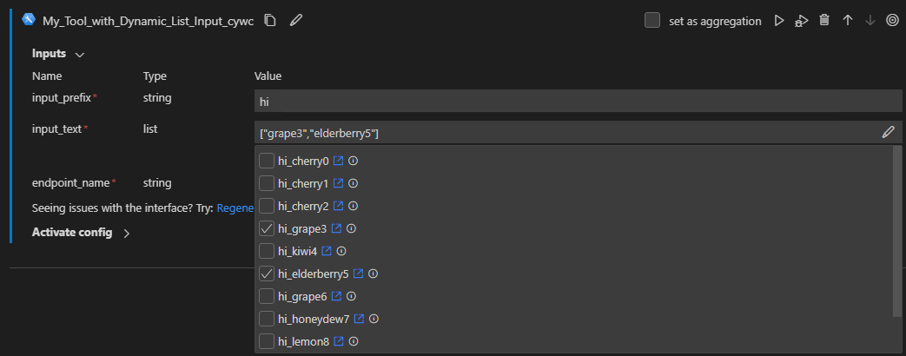
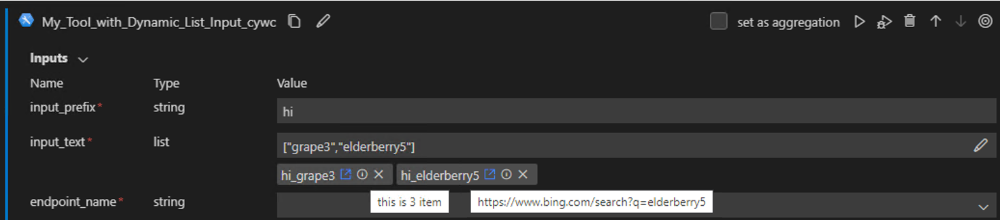

Creating a Dynamic List Tool Input#
Tool input options can be generated on the fly using a dynamic list. Instead of having predefined static options, the tool author defines a request function that queries backends like APIs to retrieve real-time options. This enables flexible integration with various data sources to populate dynamic options. For instance, the function could call a storage API to list current files. Rather than a hardcoded list, the user sees up-to-date options when running the tool.
Prerequisites#
Please make sure you have the latest version of Prompt flow for VS Code installed (v1.3.1+).
Please install promptflow package and ensure that its version is 1.0.0 or later.
pip install promptflow>=1.0.0
Create a tool input with dynamic listing#
Create a list function#
To enable dynamic listing, the tool author defines a request function with the following structure:
Type: Regular Python function, can be in tool file or separate file
Input: Accepts parameters needed to fetch options
Output: Returns a list of option objects as
List[Dict[str, Union[str, int, float, list, Dict]]]:Required key:
value: Internal option value passed to tool function
Optional keys:
display_value: Display text shown in dropdown (defaults tovalue)hyperlink: URL to open when option clickeddescription: Tooltip text on hover
This function can make backend calls to retrieve the latest options, returning them in a standardized dictionary structure for the dynamic list. The required and optional keys enable configuring how each option appears and behaves in the tool input dropdown. See my_list_func as an example.
def my_list_func(prefix: str = "", size: int = 10, **kwargs) -> List[Dict[str, Union[str, int, float, list, Dict]]]:
"""This is a dummy function to generate a list of items.
:param prefix: prefix to add to each item.
:param size: number of items to generate.
:param kwargs: other parameters.
:return: a list of items. Each item is a dict with the following keys:
- value: for backend use. Required.
- display_value: for UI display. Optional.
- hyperlink: external link. Optional.
- description: information icon tip. Optional.
"""
import random
words = ["apple", "banana", "cherry", "date", "elderberry", "fig", "grape", "honeydew", "kiwi", "lemon"]
result = []
for i in range(size):
random_word = f"{random.choice(words)}{i}"
cur_item = {
"value": random_word,
"display_value": f"{prefix}_{random_word}",
"hyperlink": f'https://www.bing.com/search?q={random_word}',
"description": f"this is {i} item",
}
result.append(cur_item)
return result
Configure a tool input with the list function#
In inputs section of tool YAML, add following properties to the input that you want to make dynamic:
dynamic_list:func_path: Path to the list function (module_name.function_name).func_kwargs: Parameters to pass to the function, can reference other input values.
allow_manual_entry: Allow user to enter input value manually. Default to false.is_multi_select: Allow user to select multiple values. Default to false.
See tool_with_dynamic_list_input.yaml as an example.
my_tool_package.tools.tool_with_dynamic_list_input.my_tool:
function: my_tool
inputs:
input_text:
type:
- list
dynamic_list:
func_path: my_tool_package.tools.tool_with_dynamic_list_input.my_list_func
func_kwargs:
- name: prefix # argument name to be passed to the function
type:
- string
# if optional is not specified, default to false.
# this is for UX pre-validaton. If optional is false, but no input. UX can throw error in advanced.
optional: true
reference: ${inputs.input_prefix} # dynamic reference to another input parameter
- name: size # another argument name to be passed to the function
type:
- int
optional: true
default: 10
# enum and dynamic list may need below setting.
# allow user to enter input value manually, default false.
allow_manual_entry: true
# allow user to select multiple values, default false.
is_multi_select: true
# used to filter
input_prefix:
type:
- string
module: my_tool_package.tools.tool_with_dynamic_list_input
name: My Tool with Dynamic List Input
description: This is my tool with dynamic list input
type: python
Use the tool in VS Code#
Once you package and share your tool, you can use it in VS Code per the tool package guide. You could try my-tools-package for a quick test.
pip install my-tools-package>=0.0.8
 
Note: If your dynamic list function call Azure APIs, you need to login to Azure and set default workspace. Otherwise, the tool input will be empty and you can’t select anything. See FAQs for more details.
FAQs#
I’m a tool user, and cannot see any options in dynamic list tool input. What should I do?#
If you are unable to see any options in a dynamic list tool input, you may see an error message below the input field stating:
“Unable to display list of items due to XXX. Please contact the tool author/support team for troubleshooting assistance.”
If this occurs, follow these troubleshooting steps:
Note the exact error message shown. This provides details on why the dynamic list failed to populate.
Contact the tool author/support team and report the issue. Provide the error message so they can investigate the root cause.